El análisis de redes complejas ofrece una perspectiva fascinante para estudiar la estructura narrativa de la literatura. Este proyecto consiste en la construcción y análisis topológico de la red de personajes de La Comunidad del Anillo de J.R.R. Tolkien. En este modelo matemático, cada nodo representa a un personaje y las aristas establecen una relación de proximidad narrativa: dos personajes están conectados si se mencionan en el texto original con una separación menor a quince palabras. El objetivo principal es desentrañar la arquitectura interna de la novela, visualizando cómo se agrupan los personajes y cuantificando las dinámicas sociales y de género que subyacen en la obra.
El primer reto al analizar una obra literaria, especialmente en el universo de Tolkien, es la multiplicidad de nombres; un mismo personaje puede ser llamado "Strider" en un diálogo y "Aragorn" en la narrativa. Para resolver esto, se implementó un diccionario exhaustivo de alias.
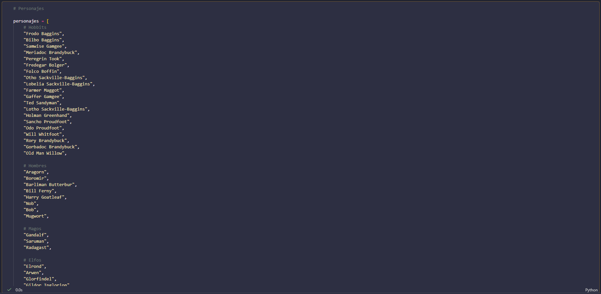
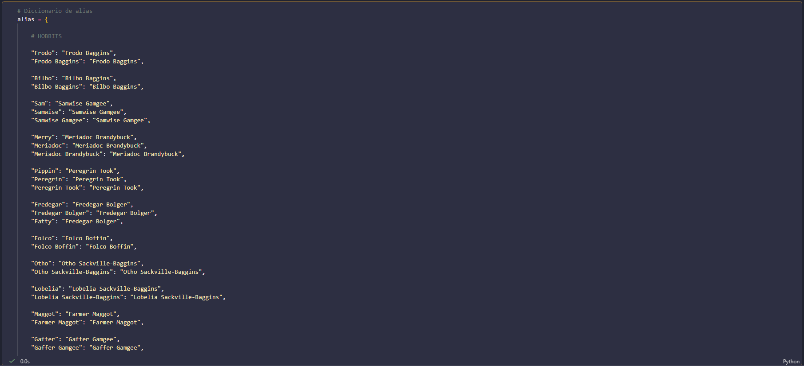
Tras cargar el texto original, se utilizaron expresiones regulares para limpiar, normalizar y extraer secuencialmente cada palabra del libro, garantizando que el algoritmo identificara a las entidades de manera uniforme sin importar la variante de su nombre.
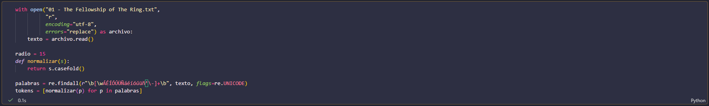
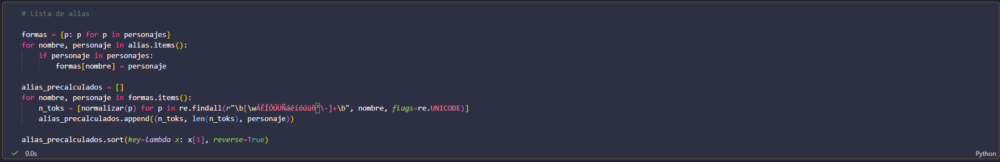
Con el texto completamente procesado en forma de tokens, el siguiente paso consistió en diseñar un algoritmo de búsqueda eficiente. Para evitar cuellos de botella en el rendimiento al procesar una novela entera, se precalcularon las longitudes y los valores de cada alias. El código recorre el arreglo de palabras registrando el índice exacto donde comienza y termina el nombre de un personaje. Una vez obtenido este registro de coordenadas espaciales dentro del texto, se procedió a comparar las posiciones relativas entre cada par de menciones. Si la distancia entre la aparición de dos personajes distintos era menor o igual al radio de quince palabras, se contabilizaba una interacción, acumulando este valor de coocurrencia en una matriz de adyacencia.
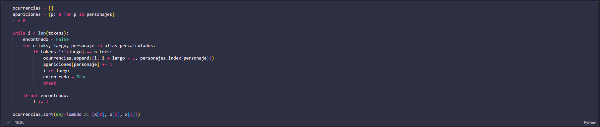
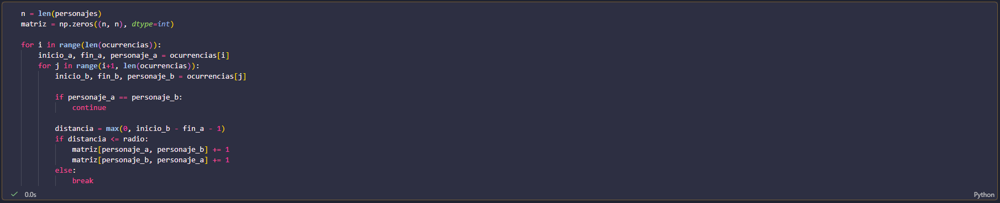
Finalmente, esta estructura matricial se transformó en un modelo topológico utilizando la biblioteca networkx. Cada personaje se instanció como un nodo cuyo atributo de peso corresponde a su frecuencia total de apariciones en el texto. Simultáneamente, las interacciones validadas se tradujeron en aristas, donde el peso de la conexión representa la cantidad de veces que dos personajes compartieron esa cercanía narrativa. Además se calcularon las métricas de centralidad mediante código.
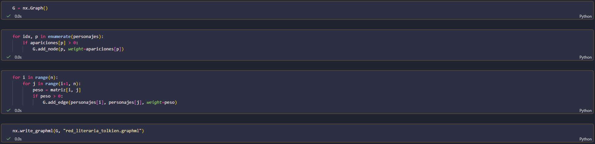
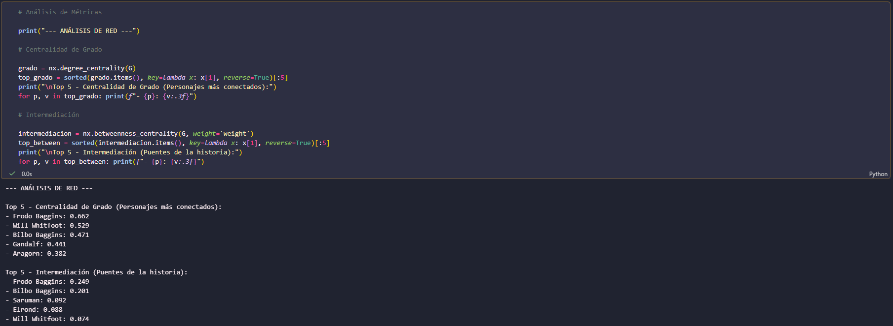
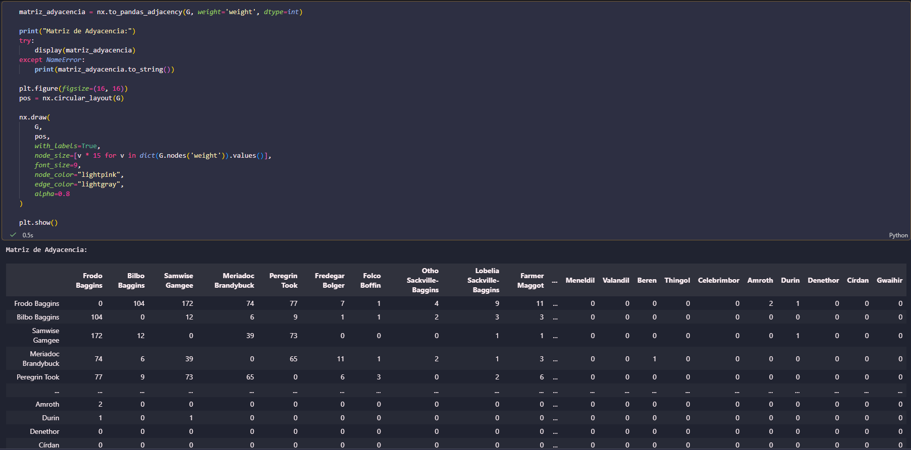
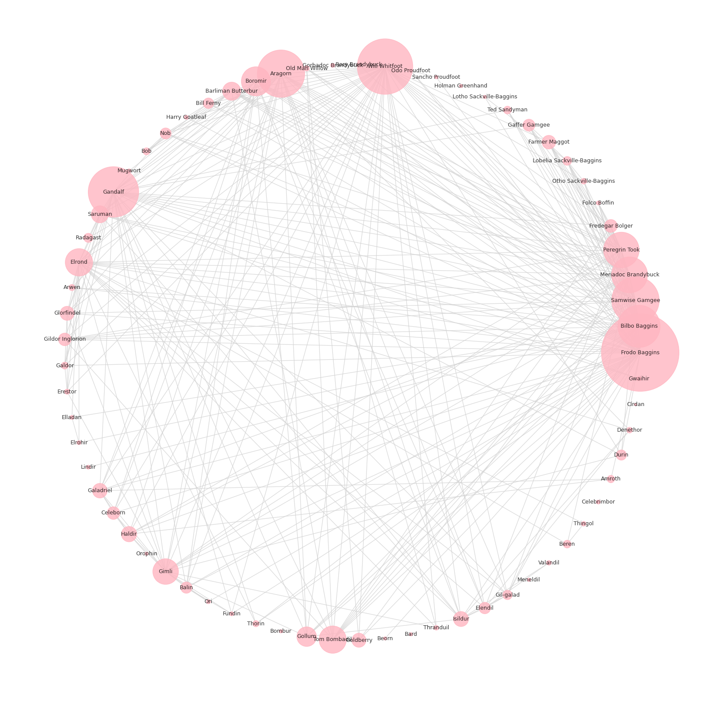
Resultados y análisis de la red
La visualización de la red mediante una distribución circular revela claramente la estructura de la trama y las ubicaciones geográficas de la Tierra Media. Al analizar la red con métricas de centralidad, la Centralidad de Grado identificó de forma precisa a los protagonistas absolutos del texto, como Frodo Baggins y Gandalf, por su alta densidad de conexiones. De manera más reveladora, la Intermediación destacó a los personajes puente; aquellos que, independientemente de su volumen total de apariciones, son fundamentales para conectar grupos aislados, actuando como el hilo conductor entre clústeres como La Comarca y Rivendel.
Dinámica de genero
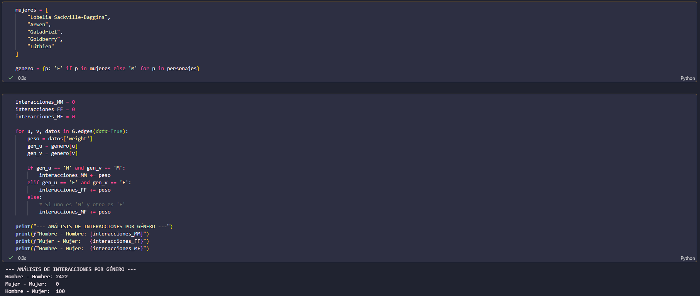
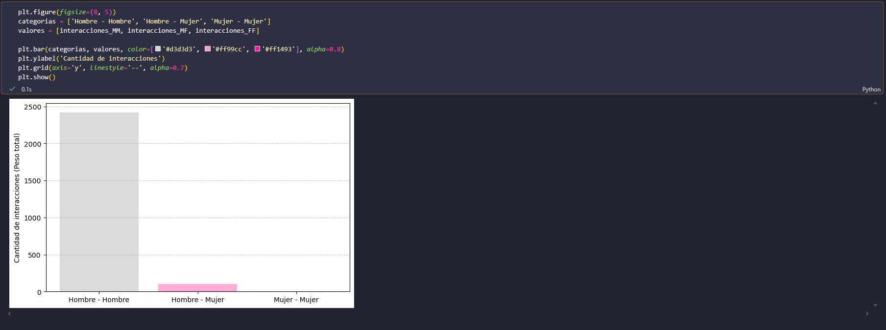
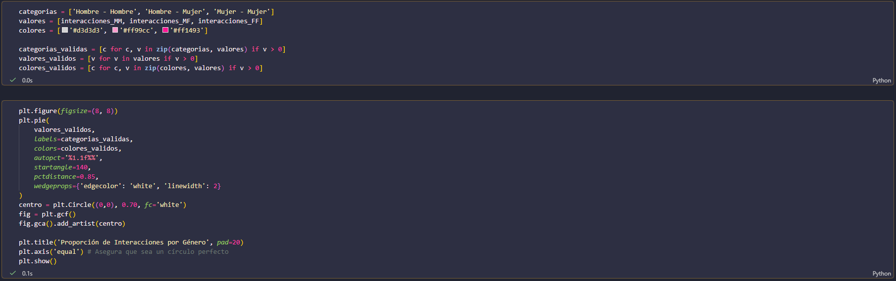
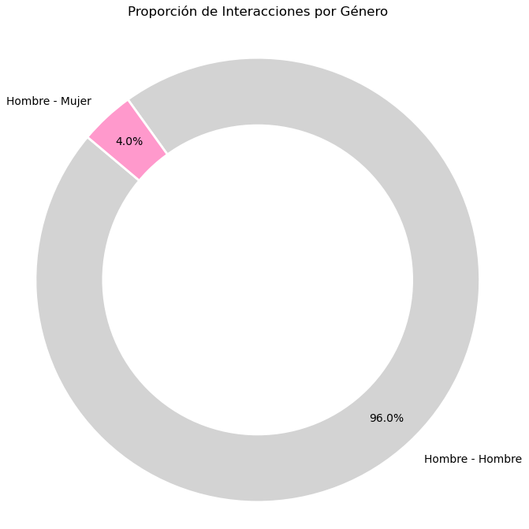
Para profundizar en las dinámicas sociales del libro, se realizó un análisis proporcional de interacciones segmentado por género. Los resultados, modelados en un gráfico de proporción, cuantifican una abrumadora mayoría de interacciones masculinas (Hombre-Hombre), reflejando tanto la composición de la "Comunidad" titular como las convenciones literarias de la época. Las interacciones cruzadas (Hombre-Mujer) representan un porcentaje marginal, mientras que las interacciones exclusivas entre mujeres son nulas dentro de este radio de palabras. En conclusión, modelar una novela como una gráfica permite mapear no solo el viaje físico de los personajes, sino extraer patrones cuantitativos objetivos sobre el comportamiento, la segregación y la estructura social diseñada por el autor.